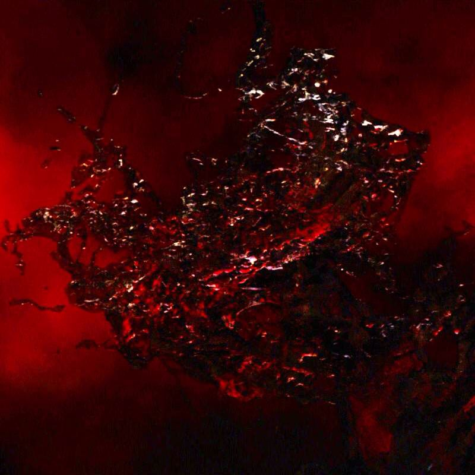

The reality stone gives the user the ability to change the reality of something of someone to become something something else. So if you wanted to change the appearence of a person, you can use the reality stone to change it. The first appearence of the stone was in the Aeter in Thor: The Dark World. The Aether an liquid thing that gave the possessor the power to destory a realm. In Thor: The Dark World, Jane Foster managed to find the Aether got transported to Asgard by Thor. Malekith the leader of the Dark Elves was told that the Aether was in the posecession of a mortal. Malekith, After thousands of years, Malekith finally goes after the Aether to the mission to rule all the 9 realms. He then goes after Jane in Asgard. While Odin is protecting Jane, Thor seeks out for help from his half brother Loki. Thor and Loki travel to the Realm of the Dark Elves to confront Malekith and Kurse. Until Thor and Loki create a distraction for Malekith and Kurse to set off. They bring Jane to the realm for Malekith to gain the Aether power. The Loki fake his own hand decapitation to sucker punch Malekith. Then after a long battle through the realms, Thor was able to defeat Malekith. After the confrontation, Sif and Volstagg decide to give the Aether to the Collector.
By Quora CC-BY & Stone Image by Pinterest CC-BY